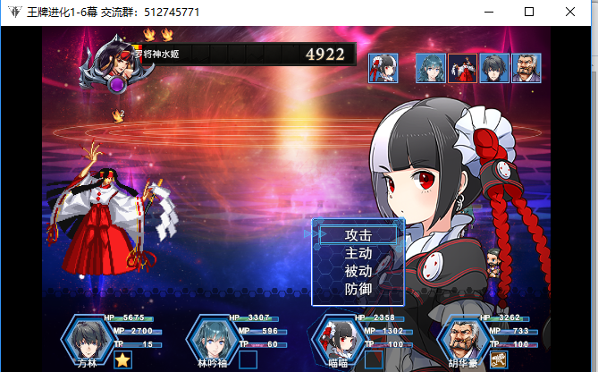

0. 自言
基本不是刚玩，都是玩了很久了。
以前写的word
分享资源，更偏向我个人的笔记吧
本来为了安全，用github（心理安慰）
但它太卡了，好要翻墙了
我狗胆用gitee试试；
还是新建一个号吧；2020-9-7 04:15:55
1. 游戏_game_RPG
1.1 旅の仲間製品版110ゲームファイル
RJ136190
虽然游戏场景不多，但剧情挺有意思的；
同社团的：痴女探偵オナン〜膣内の迷宮〜
感觉也不错；
Ex没有；2020-8-28 01:48:57
1.2 魔立ロリサキュバス妖魔園1.53
链接: https://pan.baidu.com/s/1ZalTMMb1y3HKVvx4bgzu8g 提取码: 7te9 复制这段内容后打开百度网盘手机App，操作更方便哦
1.3 王牌进化 -国产免费游戏
1.来自：https://tieba.baidu.com/p/6338158597
- 是在贴吧发布的游戏；
- 贴吧里面最新的是1.65版本，在最后的作者发言里面有
2.作者的云盘链接：
- 1.65版本更新：链接: https王://pan.b牌aidu.com进/s/1qZ0xGY化OpYEC8t怎么CHyStcV2A 提取码: 3g样ds
3.作者说加密了
- 但仍然可以使用游戏作弊的一些工具
- 作者的加密主要是因为原创了一些”原话“
- 作者为啥不用 爱发电 之类的众筹？
4.预览：

当时也是看到这个可爱的妹子想去玩的；
- 结果只是个前期工具人。玩到第二章，我就没玩了。
- 还加了群，3元入群费。2020-9-7 02:19:06
1.4 勇战前章汉化–sstm
1.需要穿越（资格）
2.有网友说，无法验证
我当时也是
先看带着的txt说明：
好吧没有；
是页面上的：
关于SSP2验证（钥匙**）的使用方法：**
为了确保不出问题
请关闭360等杀毒软件
首先请务必确保您的龙头运行正常，不缺任何插件，原版游戏运行正常
并且确保字体不缺失，避免验证出现错误
原版游戏可正常运行为最基础前提
之后使用下载下来的验证程序
将下载好的补丁覆盖到游戏目录（也称为游戏根目录）
下载帖子右边购买链接下的钥匙并将其移动到游戏目录**（不要错了顺序）**
确保自己的账号是穿越成功的账号并且购买了资源贴
“在这些无误的基础上开始游戏程序等待成功”
验证次数有限如果提示失败请务必不要盲目继续尝试，反复确认游戏原版是否能正常运行
以及验证的步骤是否完全正确无误，如果因次数问题无法继续使用可以等待下个月继续运行，如果因为被封导致无法继续使用后果自负
游戏原版1.21下载：
1
2
3
4
5
6
7新版补丁：（新版本需要使用新钥匙 请重新下载验证程序秘钥）
链接：https://pan.baidu.com/s/19pPBdxuHC9HbbGbhtJgTmA
提取码：vwl9
本体文件：
链接：https://pan.baidu.com/s/16gp0hB32e4aPkZMSXFJRNw
提取码：jic5解压密码：sstm
2.1 首先是原版游戏可以运行；
- 这里我理解的，就是自己版本的游戏，几乎都是能运行的，不然还考虑什么补丁
- 然后我错了，我用的我2.11版本死活不能验证
2.2 用sstm给的1.21版本。
- 验证成功
3.不能解包，解包了无法验证
实验：
先验证，后解包，失败，找不到脚本；
先解包，打得开游戏，存档，再验证，找不到脚本；so
只有不解包….希望存档共用，需要改的时候，去解包这边改；
4.如果，没有钥匙，就去下载，50积分，能穿越都有；
- 找不到哪里下载？右边滚动条滑一下；
- 找不到找我
2. game_galgame
2.1 アンダーニースオデッセイ
画风独特，但够M
EX：https://exhentai.org/g/1697948/e4c2a5cb3d/?p=7
为了安全，不敢给预览图；可以翻墙的可以去DL看看；可以去EX的，去EX看
3. 音声_Sound
3.0 概述
3.1 無感情冷酷少女のペニス耐性強化訓練 よりハードになるボイスオプション選択可能
RJ293819 ; 因为是南+的，所以无法直接分享

- DL：https://www.dlsite.com/maniax/work/=/product_id/RJ293819.html
- 资源来源：https://bbs.level-plus.net/read.php?tid-898935.html
- 自话：真希望这些自购者能把自己的 支付宝，微信 二维码 放出来。可能也就个位数，但也想一份力；
3.1.1 软件汉化lrc
概述
前排提醒：本贴汉化为软件汉化，仅供测试看热闹尝新鲜使用。质量不佳，勿喷！想要质量翻译请认准各大汉化组作品！
之前发帖介绍了两个音声自动翻译软件，这次找了RJ293819这部作品中的无SE版本（无音效版本，因为音效对软件识别准确度有很大影响） 做测试用，给大家看看效果（原帖地址：https://bbs.level-plus.net/read.php?tid-898935.html @snake 本贴只放了LRC文件，音频去原帖找吧）
如果效果你还算满意，那么你可以看看我的历史发帖，里面有软件相关的介绍，可以尝试用用。
软件翻译的优势就在于，不需要使用者有任何日语基础，只要启动软件，输入音频，中文字幕就处理出来了。资源来源：https://bbs.level-plus.net/read.php?tid=903456 ；解压密码 ：south-plus
感谢大佬们的制作与分享。
哇，汉化音频的软件！但是音声怎么好用，上面3.1 应该是 类似 galgame，才让我去的；
- oh no，是平常的音声…没有画面；2020-8-4 05:04:01